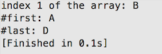
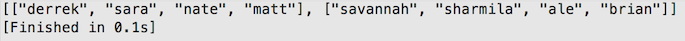

Arrays: What they are and how to use them
I took a couple Java programming classes in college and I have to admit that I had some trouble when it came to arrays. It was a little scary to face them again during phase0. I should also mention that working with arrays in Ruby is a lot nicer and more forgiving then Java, I guess its like using training wheels. When I think back to college and being completely stumped by arrays, I’m actually not too sure about what I didn’t understand. I think it was hard for me to see how I could perform a set of actions on a set of data. But thanks to all the added methods in the Ruby array class, iterating through arrays, splitting, sorting, and even turning an array into another data structure is simple. Lets start from the very beginning.
What is an Array?
An array is an indexed collection of objects. They are the oldest structure in programming languages to store a data collection, in a naturally sorted way. Most other structures (stacks, queues, hashes, etc) are some forms and diversions of arrays. Arrays are also my favorite data structure to work with, in case you couldn’t tell that already.
You can create an array in Ruby using the box bracket notation. So an empty array would be declared like: array = [] The index of an array starts at 0 so the first object in an array named can be targeted by using the box notation: array[0]. Generally, square braces are used to reference elements at a certain index. Ruby also has a couple methods that are used to return common elements of an array such as #first and #last which returns the first and last element of the array respectively.
outputs:
Okay, but what good is an ordered collection of data?
In most languages, arrays only support one kind of data-type. This means that a 1d array cannot contain a mixture of strings, integers, booleans, etc. However, since everything is an object in ruby, we can put whatever data-type we like in our arrays. I can have an array of [“cats”, 5, true]. I’m not sure what I would use it for though.
Arrays can be used to represent a whole slew of awesome things. Suppose you have a list of students in your class and you need to create a random groups of 4 for a class activity. You can create an array that holds all the names of your students, then shuffle the array, and split it up by 4.
outputs:
(try running that code several times and you should get different outputs each time)
That second line might seem a bit confusing. But the gist of it is that we shuffle our array first using “.shuffle”. Then we slice our array at every 4th element using “.each_slice” and then use “.to_a” to return our sliced array. But what if we had a class of 9 students? We would have to adjust our algorithm in a way that makes sure that every group has 3 students (maybe use each_slice(3) instead?). There are several ways to solve these problems.
You might have noticed something interesting about the output of our class groups. The output is in the form of [ [1,2,3,4] , [1,2,3,4] ]. This is a 2d array and it brings us to my favorite use of arrays thus far: using an array is to represent a 2d map. I am quite partial to video game maps but anything with an x and y coordinate can be represented by a 2d array.
Here is a 2d array used to represent a video game map in Chris Pine’s ‘Learn to Program’.
In this particular map, Pine uses 'M' to mark bodies of land and 'o' to represent water. The x coordinates of the map are determined by the index of the nested array and the y coordinates are determined by the index of the outer array. The fun thing about these arrays is the fact that the content can be automatically generated by applying simple algorithms. But the magic and wonder doesn’t stop there. Go forth and create a 3d array or any ordered collection of objects, the potential of arrays is limitless!
Resources:
- Chris Pine's Learn to Program
- Treehoues Blog: The Basics of Ruby Arrays
- TutorialsPoint: Ruby Arrays
- Ruby Docs: Array Class
- Willamette University: 2d Arrays
By: Sharmila Jesupaul on September 17, 2014